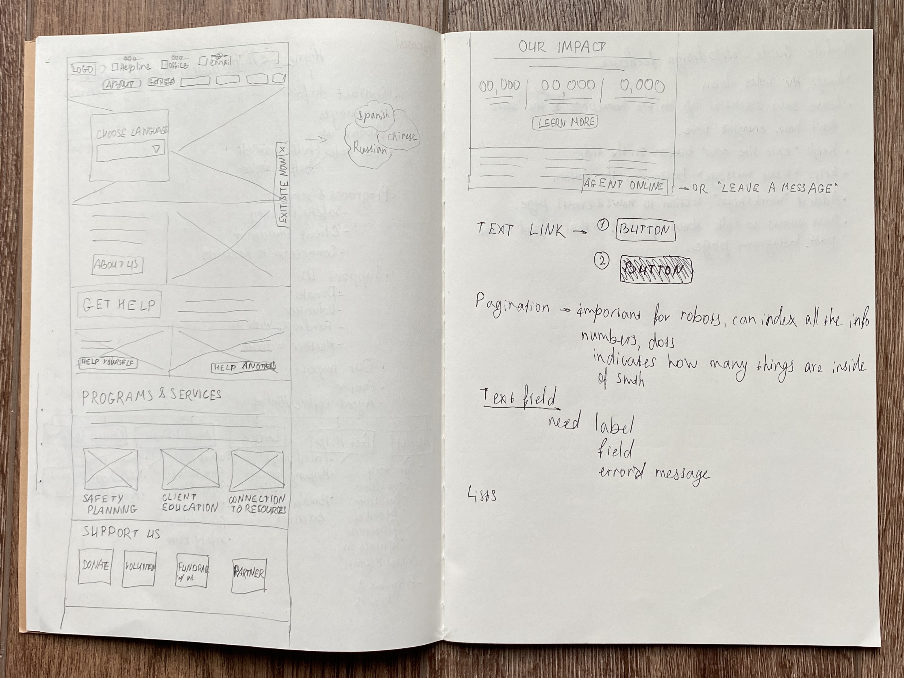
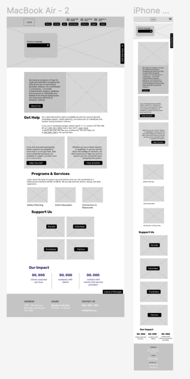

There are a lot of information on the home page and I thought women who search for immediate support don’t have much time to go through the website. Therefore, I believe the homepage should contain essential information, should be easily navigated, and look neat and simple. Please see my notes on the right.
MFSS
Web & Mobile redesign
Vancouver Multicultural Family Support Services Society (VMFSS) is the non profit organization that supports new immigrants and refuges who are in difficult situation. They also help women who went through domestic violence by providing support.
-
ROLE
Rebranding
UI Design
UX Research
-
TEAM
Anisa Dzhumasheva
-
CLIENTS
Student project for Visual Design II
-
TIME
Spring, 2024 (12 weeks)
Project Overview
I redesigned a website of choice for my student project. I chose an existing organization so that I can study their brand character and website content types. Besides redesigning the website, I also gave the organization a new name.
Problem
I found the original website of the VMFSSS is a bit clustered. There are a lot of information on the home page and I thought women who search for immediate support don’t have much time to go through the website. Therefore, I believe the homepage should contain essential information, should be easily navigated, and look neat and simple.
Process
I proceeded to investigate the local non profit organizations that work with the victims of domestic violence. I really like the concept of The Today Centre. The sunrise gives a feeling of the new day, new beginning. The sky blue colour in combination of yellow, white and red gives a feeling of fresh beginning, new page in life. It gives a sense of security and trust. I really like the simplicity, illustrations and colour choice of the “Respect” NPO for men who went through domestic Violence. The illustrations look interesting and eye-catchy.
The Today Centre, Canada [left]. Respect, UK [right].
Opportunities for Improvement

Moodboard
The moodboard that showcase all my findingings for inspiration and insights.I wanted to go with something bold and powerful, something that would give women a sense that they not alone, they are strong and the MFSS organization is here to help them, support them and be around. Therefore, picked the colours of the poster in the left down corner.
Keywords: connection, shadow, power, strength, courage, end the violence.
UI Kit
Initial Sketches and Low-Fidelity Wireframes


Website and mobile design outcomes
The homepage consists of different types of modules such as the hero image that represents the organization’s main idea and its audience. It is also divided into the main sections that allow users to get the most important information they need. I have renamed the Events page to News & Events and added more sections like Upcoming Events, Workshops, Past Events and Instagram. I believe with more information the clients and users have more support. I have added the Contact Us tab to the nav menu and simplified the form for the users, added the emergency information to the top, along with the phone number of the helpline, supporting information and three options to contact the organization.